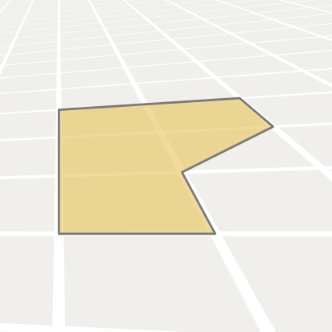

California Precinct Lookup
Type an address and see its precinct on a map, in all 58 counties, built from each county's public data.

precinct-lookup on npm
The library behind the lookup: an address in, a precinct and its shape out, from small static files. No database, no server.
npm install precinct-lookup npx precinct-lookup fetch 41